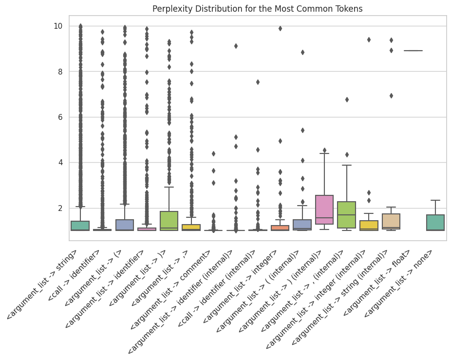

Using custom data configuration bigcode--the-stack-smol-7b51f8bde3058781
Found cached dataset json (/home/nathan/.cache/huggingface/datasets/bigcode___json/bigcode--the-stack-smol-7b51f8bde3058781/0.0.0/e6070c77f18f01a5ad4551a8b7edfba20b8438b7cad4d94e6ad9378022ce4aab)
Loading cached processed dataset at /home/nathan/.cache/huggingface/datasets/bigcode___json/bigcode--the-stack-smol-7b51f8bde3058781/0.0.0/e6070c77f18f01a5ad4551a8b7edfba20b8438b7cad4d94e6ad9378022ce4aab/cache-b38dcc32a872398b.arrow
3072
def find_duplicates(items):# Create an empty set to store the items that we have already seen seen =set()# Create an empty list to store the duplicates that we find duplicates = []# Loop through each item in the listfor item in items:# If the item is already in the "seen" set, then it must be a duplicateif item in seen:# Add the duplicate to the list duplicates.append(item)# If the item is not in the "seen" set, then add it to the setelse: seen.add(item)# Return the list of duplicatesreturn duplicatesrepo_names = find_duplicates(filtered_ds["repository_name"])repo_files = {}for repo_name in repo_names: rows_w_repo = filtered_ds.filter(lambda example: example["repository_name"] == repo_name )iflen(rows_w_repo) >1: repo_files[repo_name] = [row["content"] for row in rows_w_repo]iflen(repo_files) >400:break# filter out repos with only one filefiltered_ds = filtered_ds.filter(lambda example: example["repository_name"] in repo_files)len(filtered_ds)
Loading cached processed dataset at /home/nathan/.cache/huggingface/datasets/bigcode___json/bigcode--the-stack-smol-7b51f8bde3058781/0.0.0/e6070c77f18f01a5ad4551a8b7edfba20b8438b7cad4d94e6ad9378022ce4aab/cache-0dd594043cdb7dfb.arrow
Loading cached processed dataset at /home/nathan/.cache/huggingface/datasets/bigcode___json/bigcode--the-stack-smol-7b51f8bde3058781/0.0.0/e6070c77f18f01a5ad4551a8b7edfba20b8438b7cad4d94e6ad9378022ce4aab/cache-9e8d9f11675f0fd5.arrow
Loading cached processed dataset at /home/nathan/.cache/huggingface/datasets/bigcode___json/bigcode--the-stack-smol-7b51f8bde3058781/0.0.0/e6070c77f18f01a5ad4551a8b7edfba20b8438b7cad4d94e6ad9378022ce4aab/cache-617ac77a84286d46.arrow
Loading cached processed dataset at /home/nathan/.cache/huggingface/datasets/bigcode___json/bigcode--the-stack-smol-7b51f8bde3058781/0.0.0/e6070c77f18f01a5ad4551a8b7edfba20b8438b7cad4d94e6ad9378022ce4aab/cache-fa7394602e11c848.arrow
Loading cached processed dataset at /home/nathan/.cache/huggingface/datasets/bigcode___json/bigcode--the-stack-smol-7b51f8bde3058781/0.0.0/e6070c77f18f01a5ad4551a8b7edfba20b8438b7cad4d94e6ad9378022ce4aab/cache-6477901bac5699a3.arrow
Loading cached processed dataset at /home/nathan/.cache/huggingface/datasets/bigcode___json/bigcode--the-stack-smol-7b51f8bde3058781/0.0.0/e6070c77f18f01a5ad4551a8b7edfba20b8438b7cad4d94e6ad9378022ce4aab/cache-8fba30c0043e2758.arrow
Loading cached processed dataset at /home/nathan/.cache/huggingface/datasets/bigcode___json/bigcode--the-stack-smol-7b51f8bde3058781/0.0.0/e6070c77f18f01a5ad4551a8b7edfba20b8438b7cad4d94e6ad9378022ce4aab/cache-b9494a3148fba70c.arrow
Loading cached processed dataset at /home/nathan/.cache/huggingface/datasets/bigcode___json/bigcode--the-stack-smol-7b51f8bde3058781/0.0.0/e6070c77f18f01a5ad4551a8b7edfba20b8438b7cad4d94e6ad9378022ce4aab/cache-fa7394602e11c848.arrow
Loading cached processed dataset at /home/nathan/.cache/huggingface/datasets/bigcode___json/bigcode--the-stack-smol-7b51f8bde3058781/0.0.0/e6070c77f18f01a5ad4551a8b7edfba20b8438b7cad4d94e6ad9378022ce4aab/cache-fa7394602e11c848.arrow
Loading cached processed dataset at /home/nathan/.cache/huggingface/datasets/bigcode___json/bigcode--the-stack-smol-7b51f8bde3058781/0.0.0/e6070c77f18f01a5ad4551a8b7edfba20b8438b7cad4d94e6ad9378022ce4aab/cache-fa7394602e11c848.arrow
Loading cached processed dataset at /home/nathan/.cache/huggingface/datasets/bigcode___json/bigcode--the-stack-smol-7b51f8bde3058781/0.0.0/e6070c77f18f01a5ad4551a8b7edfba20b8438b7cad4d94e6ad9378022ce4aab/cache-df87f5fa053f298d.arrow
Loading cached processed dataset at /home/nathan/.cache/huggingface/datasets/bigcode___json/bigcode--the-stack-smol-7b51f8bde3058781/0.0.0/e6070c77f18f01a5ad4551a8b7edfba20b8438b7cad4d94e6ad9378022ce4aab/cache-3cb8409985b9c937.arrow
Loading cached processed dataset at /home/nathan/.cache/huggingface/datasets/bigcode___json/bigcode--the-stack-smol-7b51f8bde3058781/0.0.0/e6070c77f18f01a5ad4551a8b7edfba20b8438b7cad4d94e6ad9378022ce4aab/cache-6249181d8b91acb7.arrow
Loading cached processed dataset at /home/nathan/.cache/huggingface/datasets/bigcode___json/bigcode--the-stack-smol-7b51f8bde3058781/0.0.0/e6070c77f18f01a5ad4551a8b7edfba20b8438b7cad4d94e6ad9378022ce4aab/cache-fa7394602e11c848.arrow
Loading cached processed dataset at /home/nathan/.cache/huggingface/datasets/bigcode___json/bigcode--the-stack-smol-7b51f8bde3058781/0.0.0/e6070c77f18f01a5ad4551a8b7edfba20b8438b7cad4d94e6ad9378022ce4aab/cache-7e02fa7394d5562d.arrow
Loading cached processed dataset at /home/nathan/.cache/huggingface/datasets/bigcode___json/bigcode--the-stack-smol-7b51f8bde3058781/0.0.0/e6070c77f18f01a5ad4551a8b7edfba20b8438b7cad4d94e6ad9378022ce4aab/cache-9e8d9f11675f0fd5.arrow
Loading cached processed dataset at /home/nathan/.cache/huggingface/datasets/bigcode___json/bigcode--the-stack-smol-7b51f8bde3058781/0.0.0/e6070c77f18f01a5ad4551a8b7edfba20b8438b7cad4d94e6ad9378022ce4aab/cache-fa7394602e11c848.arrow
Loading cached processed dataset at /home/nathan/.cache/huggingface/datasets/bigcode___json/bigcode--the-stack-smol-7b51f8bde3058781/0.0.0/e6070c77f18f01a5ad4551a8b7edfba20b8438b7cad4d94e6ad9378022ce4aab/cache-21a1aed9500babb7.arrow
Loading cached processed dataset at /home/nathan/.cache/huggingface/datasets/bigcode___json/bigcode--the-stack-smol-7b51f8bde3058781/0.0.0/e6070c77f18f01a5ad4551a8b7edfba20b8438b7cad4d94e6ad9378022ce4aab/cache-e4c090ff2a34e9f1.arrow
Loading cached processed dataset at /home/nathan/.cache/huggingface/datasets/bigcode___json/bigcode--the-stack-smol-7b51f8bde3058781/0.0.0/e6070c77f18f01a5ad4551a8b7edfba20b8438b7cad4d94e6ad9378022ce4aab/cache-fe53bd60d0b0af09.arrow
Loading cached processed dataset at /home/nathan/.cache/huggingface/datasets/bigcode___json/bigcode--the-stack-smol-7b51f8bde3058781/0.0.0/e6070c77f18f01a5ad4551a8b7edfba20b8438b7cad4d94e6ad9378022ce4aab/cache-78ad9175d54e6807.arrow
Loading cached processed dataset at /home/nathan/.cache/huggingface/datasets/bigcode___json/bigcode--the-stack-smol-7b51f8bde3058781/0.0.0/e6070c77f18f01a5ad4551a8b7edfba20b8438b7cad4d94e6ad9378022ce4aab/cache-a93eee68fd7bf113.arrow
Loading cached processed dataset at /home/nathan/.cache/huggingface/datasets/bigcode___json/bigcode--the-stack-smol-7b51f8bde3058781/0.0.0/e6070c77f18f01a5ad4551a8b7edfba20b8438b7cad4d94e6ad9378022ce4aab/cache-78ad9175d54e6807.arrow
Loading cached processed dataset at /home/nathan/.cache/huggingface/datasets/bigcode___json/bigcode--the-stack-smol-7b51f8bde3058781/0.0.0/e6070c77f18f01a5ad4551a8b7edfba20b8438b7cad4d94e6ad9378022ce4aab/cache-a0eb259f7ed83dca.arrow
Loading cached processed dataset at /home/nathan/.cache/huggingface/datasets/bigcode___json/bigcode--the-stack-smol-7b51f8bde3058781/0.0.0/e6070c77f18f01a5ad4551a8b7edfba20b8438b7cad4d94e6ad9378022ce4aab/cache-bc011177ae592d36.arrow
Loading cached processed dataset at /home/nathan/.cache/huggingface/datasets/bigcode___json/bigcode--the-stack-smol-7b51f8bde3058781/0.0.0/e6070c77f18f01a5ad4551a8b7edfba20b8438b7cad4d94e6ad9378022ce4aab/cache-6c83726c0482208d.arrow
Loading cached processed dataset at /home/nathan/.cache/huggingface/datasets/bigcode___json/bigcode--the-stack-smol-7b51f8bde3058781/0.0.0/e6070c77f18f01a5ad4551a8b7edfba20b8438b7cad4d94e6ad9378022ce4aab/cache-81a33b25fc2015a0.arrow
Loading cached processed dataset at /home/nathan/.cache/huggingface/datasets/bigcode___json/bigcode--the-stack-smol-7b51f8bde3058781/0.0.0/e6070c77f18f01a5ad4551a8b7edfba20b8438b7cad4d94e6ad9378022ce4aab/cache-42b767aa1258b99c.arrow
Loading cached processed dataset at /home/nathan/.cache/huggingface/datasets/bigcode___json/bigcode--the-stack-smol-7b51f8bde3058781/0.0.0/e6070c77f18f01a5ad4551a8b7edfba20b8438b7cad4d94e6ad9378022ce4aab/cache-5a1a7bbf68bb6f47.arrow
Loading cached processed dataset at /home/nathan/.cache/huggingface/datasets/bigcode___json/bigcode--the-stack-smol-7b51f8bde3058781/0.0.0/e6070c77f18f01a5ad4551a8b7edfba20b8438b7cad4d94e6ad9378022ce4aab/cache-f438698e6d86dc9b.arrow
Loading cached processed dataset at /home/nathan/.cache/huggingface/datasets/bigcode___json/bigcode--the-stack-smol-7b51f8bde3058781/0.0.0/e6070c77f18f01a5ad4551a8b7edfba20b8438b7cad4d94e6ad9378022ce4aab/cache-cfa703d0b23aced3.arrow
Loading cached processed dataset at /home/nathan/.cache/huggingface/datasets/bigcode___json/bigcode--the-stack-smol-7b51f8bde3058781/0.0.0/e6070c77f18f01a5ad4551a8b7edfba20b8438b7cad4d94e6ad9378022ce4aab/cache-5b607ae7843b956f.arrow
Loading cached processed dataset at /home/nathan/.cache/huggingface/datasets/bigcode___json/bigcode--the-stack-smol-7b51f8bde3058781/0.0.0/e6070c77f18f01a5ad4551a8b7edfba20b8438b7cad4d94e6ad9378022ce4aab/cache-0dd594043cdb7dfb.arrow
Loading cached processed dataset at /home/nathan/.cache/huggingface/datasets/bigcode___json/bigcode--the-stack-smol-7b51f8bde3058781/0.0.0/e6070c77f18f01a5ad4551a8b7edfba20b8438b7cad4d94e6ad9378022ce4aab/cache-f89e7a6a0690390e.arrow
Loading cached processed dataset at /home/nathan/.cache/huggingface/datasets/bigcode___json/bigcode--the-stack-smol-7b51f8bde3058781/0.0.0/e6070c77f18f01a5ad4551a8b7edfba20b8438b7cad4d94e6ad9378022ce4aab/cache-5fa1e2cf9bec70a2.arrow
Loading cached processed dataset at /home/nathan/.cache/huggingface/datasets/bigcode___json/bigcode--the-stack-smol-7b51f8bde3058781/0.0.0/e6070c77f18f01a5ad4551a8b7edfba20b8438b7cad4d94e6ad9378022ce4aab/cache-21a1aed9500babb7.arrow
Loading cached processed dataset at /home/nathan/.cache/huggingface/datasets/bigcode___json/bigcode--the-stack-smol-7b51f8bde3058781/0.0.0/e6070c77f18f01a5ad4551a8b7edfba20b8438b7cad4d94e6ad9378022ce4aab/cache-cfa703d0b23aced3.arrow
Loading cached processed dataset at /home/nathan/.cache/huggingface/datasets/bigcode___json/bigcode--the-stack-smol-7b51f8bde3058781/0.0.0/e6070c77f18f01a5ad4551a8b7edfba20b8438b7cad4d94e6ad9378022ce4aab/cache-f89e7a6a0690390e.arrow
Loading cached processed dataset at /home/nathan/.cache/huggingface/datasets/bigcode___json/bigcode--the-stack-smol-7b51f8bde3058781/0.0.0/e6070c77f18f01a5ad4551a8b7edfba20b8438b7cad4d94e6ad9378022ce4aab/cache-2b0a34b49811dbf1.arrow
Loading cached processed dataset at /home/nathan/.cache/huggingface/datasets/bigcode___json/bigcode--the-stack-smol-7b51f8bde3058781/0.0.0/e6070c77f18f01a5ad4551a8b7edfba20b8438b7cad4d94e6ad9378022ce4aab/cache-fa7394602e11c848.arrow
Loading cached processed dataset at /home/nathan/.cache/huggingface/datasets/bigcode___json/bigcode--the-stack-smol-7b51f8bde3058781/0.0.0/e6070c77f18f01a5ad4551a8b7edfba20b8438b7cad4d94e6ad9378022ce4aab/cache-9e8d9f11675f0fd5.arrow
Loading cached processed dataset at /home/nathan/.cache/huggingface/datasets/bigcode___json/bigcode--the-stack-smol-7b51f8bde3058781/0.0.0/e6070c77f18f01a5ad4551a8b7edfba20b8438b7cad4d94e6ad9378022ce4aab/cache-6e433f135cafc815.arrow
Loading cached processed dataset at /home/nathan/.cache/huggingface/datasets/bigcode___json/bigcode--the-stack-smol-7b51f8bde3058781/0.0.0/e6070c77f18f01a5ad4551a8b7edfba20b8438b7cad4d94e6ad9378022ce4aab/cache-44447d1e1ca823c3.arrow
Loading cached processed dataset at /home/nathan/.cache/huggingface/datasets/bigcode___json/bigcode--the-stack-smol-7b51f8bde3058781/0.0.0/e6070c77f18f01a5ad4551a8b7edfba20b8438b7cad4d94e6ad9378022ce4aab/cache-0d517112acbcb2fb.arrow
Loading cached processed dataset at /home/nathan/.cache/huggingface/datasets/bigcode___json/bigcode--the-stack-smol-7b51f8bde3058781/0.0.0/e6070c77f18f01a5ad4551a8b7edfba20b8438b7cad4d94e6ad9378022ce4aab/cache-f438698e6d86dc9b.arrow
Loading cached processed dataset at /home/nathan/.cache/huggingface/datasets/bigcode___json/bigcode--the-stack-smol-7b51f8bde3058781/0.0.0/e6070c77f18f01a5ad4551a8b7edfba20b8438b7cad4d94e6ad9378022ce4aab/cache-f89e7a6a0690390e.arrow
Loading cached processed dataset at /home/nathan/.cache/huggingface/datasets/bigcode___json/bigcode--the-stack-smol-7b51f8bde3058781/0.0.0/e6070c77f18f01a5ad4551a8b7edfba20b8438b7cad4d94e6ad9378022ce4aab/cache-af7d990b4c5a25a8.arrow
Loading cached processed dataset at /home/nathan/.cache/huggingface/datasets/bigcode___json/bigcode--the-stack-smol-7b51f8bde3058781/0.0.0/e6070c77f18f01a5ad4551a8b7edfba20b8438b7cad4d94e6ad9378022ce4aab/cache-9e8d9f11675f0fd5.arrow
Loading cached processed dataset at /home/nathan/.cache/huggingface/datasets/bigcode___json/bigcode--the-stack-smol-7b51f8bde3058781/0.0.0/e6070c77f18f01a5ad4551a8b7edfba20b8438b7cad4d94e6ad9378022ce4aab/cache-e5233d545d28d276.arrow
Loading cached processed dataset at /home/nathan/.cache/huggingface/datasets/bigcode___json/bigcode--the-stack-smol-7b51f8bde3058781/0.0.0/e6070c77f18f01a5ad4551a8b7edfba20b8438b7cad4d94e6ad9378022ce4aab/cache-7377b8cd9c22fd1d.arrow
Loading cached processed dataset at /home/nathan/.cache/huggingface/datasets/bigcode___json/bigcode--the-stack-smol-7b51f8bde3058781/0.0.0/e6070c77f18f01a5ad4551a8b7edfba20b8438b7cad4d94e6ad9378022ce4aab/cache-f3e4160a738fa4e9.arrow
Loading cached processed dataset at /home/nathan/.cache/huggingface/datasets/bigcode___json/bigcode--the-stack-smol-7b51f8bde3058781/0.0.0/e6070c77f18f01a5ad4551a8b7edfba20b8438b7cad4d94e6ad9378022ce4aab/cache-6c3cf16ede15d46b.arrow
Loading cached processed dataset at /home/nathan/.cache/huggingface/datasets/bigcode___json/bigcode--the-stack-smol-7b51f8bde3058781/0.0.0/e6070c77f18f01a5ad4551a8b7edfba20b8438b7cad4d94e6ad9378022ce4aab/cache-93435b3794c4f665.arrow
Loading cached processed dataset at /home/nathan/.cache/huggingface/datasets/bigcode___json/bigcode--the-stack-smol-7b51f8bde3058781/0.0.0/e6070c77f18f01a5ad4551a8b7edfba20b8438b7cad4d94e6ad9378022ce4aab/cache-5fd9f1b02f803632.arrow
Loading cached processed dataset at /home/nathan/.cache/huggingface/datasets/bigcode___json/bigcode--the-stack-smol-7b51f8bde3058781/0.0.0/e6070c77f18f01a5ad4551a8b7edfba20b8438b7cad4d94e6ad9378022ce4aab/cache-56653a929f870d45.arrow
Loading cached processed dataset at /home/nathan/.cache/huggingface/datasets/bigcode___json/bigcode--the-stack-smol-7b51f8bde3058781/0.0.0/e6070c77f18f01a5ad4551a8b7edfba20b8438b7cad4d94e6ad9378022ce4aab/cache-931d2a0e669bfa84.arrow
Loading cached processed dataset at /home/nathan/.cache/huggingface/datasets/bigcode___json/bigcode--the-stack-smol-7b51f8bde3058781/0.0.0/e6070c77f18f01a5ad4551a8b7edfba20b8438b7cad4d94e6ad9378022ce4aab/cache-012ff68365940ba9.arrow
Loading cached processed dataset at /home/nathan/.cache/huggingface/datasets/bigcode___json/bigcode--the-stack-smol-7b51f8bde3058781/0.0.0/e6070c77f18f01a5ad4551a8b7edfba20b8438b7cad4d94e6ad9378022ce4aab/cache-0c4e88dc3adb011e.arrow
Loading cached processed dataset at /home/nathan/.cache/huggingface/datasets/bigcode___json/bigcode--the-stack-smol-7b51f8bde3058781/0.0.0/e6070c77f18f01a5ad4551a8b7edfba20b8438b7cad4d94e6ad9378022ce4aab/cache-eef09789656be2c2.arrow
Loading cached processed dataset at /home/nathan/.cache/huggingface/datasets/bigcode___json/bigcode--the-stack-smol-7b51f8bde3058781/0.0.0/e6070c77f18f01a5ad4551a8b7edfba20b8438b7cad4d94e6ad9378022ce4aab/cache-f89e7a6a0690390e.arrow
Loading cached processed dataset at /home/nathan/.cache/huggingface/datasets/bigcode___json/bigcode--the-stack-smol-7b51f8bde3058781/0.0.0/e6070c77f18f01a5ad4551a8b7edfba20b8438b7cad4d94e6ad9378022ce4aab/cache-7dd15631ba19a05f.arrow
Loading cached processed dataset at /home/nathan/.cache/huggingface/datasets/bigcode___json/bigcode--the-stack-smol-7b51f8bde3058781/0.0.0/e6070c77f18f01a5ad4551a8b7edfba20b8438b7cad4d94e6ad9378022ce4aab/cache-f948533773af0187.arrow
Loading cached processed dataset at /home/nathan/.cache/huggingface/datasets/bigcode___json/bigcode--the-stack-smol-7b51f8bde3058781/0.0.0/e6070c77f18f01a5ad4551a8b7edfba20b8438b7cad4d94e6ad9378022ce4aab/cache-cfa703d0b23aced3.arrow
Loading cached processed dataset at /home/nathan/.cache/huggingface/datasets/bigcode___json/bigcode--the-stack-smol-7b51f8bde3058781/0.0.0/e6070c77f18f01a5ad4551a8b7edfba20b8438b7cad4d94e6ad9378022ce4aab/cache-f89e7a6a0690390e.arrow
Loading cached processed dataset at /home/nathan/.cache/huggingface/datasets/bigcode___json/bigcode--the-stack-smol-7b51f8bde3058781/0.0.0/e6070c77f18f01a5ad4551a8b7edfba20b8438b7cad4d94e6ad9378022ce4aab/cache-fa7394602e11c848.arrow
Loading cached processed dataset at /home/nathan/.cache/huggingface/datasets/bigcode___json/bigcode--the-stack-smol-7b51f8bde3058781/0.0.0/e6070c77f18f01a5ad4551a8b7edfba20b8438b7cad4d94e6ad9378022ce4aab/cache-03c18ba23c058f0c.arrow
Loading cached processed dataset at /home/nathan/.cache/huggingface/datasets/bigcode___json/bigcode--the-stack-smol-7b51f8bde3058781/0.0.0/e6070c77f18f01a5ad4551a8b7edfba20b8438b7cad4d94e6ad9378022ce4aab/cache-f22fb3e7678f3470.arrow
Loading cached processed dataset at /home/nathan/.cache/huggingface/datasets/bigcode___json/bigcode--the-stack-smol-7b51f8bde3058781/0.0.0/e6070c77f18f01a5ad4551a8b7edfba20b8438b7cad4d94e6ad9378022ce4aab/cache-2c83b3ee0341bb08.arrow
Loading cached processed dataset at /home/nathan/.cache/huggingface/datasets/bigcode___json/bigcode--the-stack-smol-7b51f8bde3058781/0.0.0/e6070c77f18f01a5ad4551a8b7edfba20b8438b7cad4d94e6ad9378022ce4aab/cache-bc011177ae592d36.arrow
Loading cached processed dataset at /home/nathan/.cache/huggingface/datasets/bigcode___json/bigcode--the-stack-smol-7b51f8bde3058781/0.0.0/e6070c77f18f01a5ad4551a8b7edfba20b8438b7cad4d94e6ad9378022ce4aab/cache-bbca953310dabd27.arrow
Loading cached processed dataset at /home/nathan/.cache/huggingface/datasets/bigcode___json/bigcode--the-stack-smol-7b51f8bde3058781/0.0.0/e6070c77f18f01a5ad4551a8b7edfba20b8438b7cad4d94e6ad9378022ce4aab/cache-038e7b5b9f18149d.arrow
Loading cached processed dataset at /home/nathan/.cache/huggingface/datasets/bigcode___json/bigcode--the-stack-smol-7b51f8bde3058781/0.0.0/e6070c77f18f01a5ad4551a8b7edfba20b8438b7cad4d94e6ad9378022ce4aab/cache-859475b190db3748.arrow
Loading cached processed dataset at /home/nathan/.cache/huggingface/datasets/bigcode___json/bigcode--the-stack-smol-7b51f8bde3058781/0.0.0/e6070c77f18f01a5ad4551a8b7edfba20b8438b7cad4d94e6ad9378022ce4aab/cache-0bb22f71b25c52ea.arrow
Loading cached processed dataset at /home/nathan/.cache/huggingface/datasets/bigcode___json/bigcode--the-stack-smol-7b51f8bde3058781/0.0.0/e6070c77f18f01a5ad4551a8b7edfba20b8438b7cad4d94e6ad9378022ce4aab/cache-372efa95fb14c1f5.arrow
from code_tokenizers.helpers import get_internal_methods# add the internal methods to the datasetfiltered_ds = filtered_ds.map(lambda example: {"internal_methods": get_internal_methods( repo_files[example["repository_name"]], py_tokenizer ) })
Loading cached processed dataset at /home/nathan/.cache/huggingface/datasets/bigcode___json/bigcode--the-stack-smol-7b51f8bde3058781/0.0.0/e6070c77f18f01a5ad4551a8b7edfba20b8438b7cad4d94e6ad9378022ce4aab/cache-71841d6a862bf898.arrow
Loading cached processed dataset at /home/nathan/.cache/huggingface/datasets/bigcode___json/bigcode--the-stack-smol-7b51f8bde3058781/0.0.0/e6070c77f18f01a5ad4551a8b7edfba20b8438b7cad4d94e6ad9378022ce4aab/cache-4f9a19be9cd215ae.arrow
Loading cached processed dataset at /home/nathan/.cache/huggingface/datasets/bigcode___json/bigcode--the-stack-smol-7b51f8bde3058781/0.0.0/e6070c77f18f01a5ad4551a8b7edfba20b8438b7cad4d94e6ad9378022ce4aab/cache-d00979d6c3b04126.arrow
Loading cached processed dataset at /home/nathan/.cache/huggingface/datasets/bigcode___json/bigcode--the-stack-smol-7b51f8bde3058781/0.0.0/e6070c77f18f01a5ad4551a8b7edfba20b8438b7cad4d94e6ad9378022ce4aab/cache-8857911761b91855.arrow
Loading cached processed dataset at /home/nathan/.cache/huggingface/datasets/bigcode___json/bigcode--the-stack-smol-7b51f8bde3058781/0.0.0/e6070c77f18f01a5ad4551a8b7edfba20b8438b7cad4d94e6ad9378022ce4aab/cache-d8e745a84188e435.arrow
Loading cached processed dataset at /home/nathan/.cache/huggingface/datasets/bigcode___json/bigcode--the-stack-smol-7b51f8bde3058781/0.0.0/e6070c77f18f01a5ad4551a8b7edfba20b8438b7cad4d94e6ad9378022ce4aab/cache-78c57230b30b284e.arrow
Loading cached processed dataset at /home/nathan/.cache/huggingface/datasets/bigcode___json/bigcode--the-stack-smol-7b51f8bde3058781/0.0.0/e6070c77f18f01a5ad4551a8b7edfba20b8438b7cad4d94e6ad9378022ce4aab/cache-83fa61f956b994d3.arrow
Loading cached processed dataset at /home/nathan/.cache/huggingface/datasets/bigcode___json/bigcode--the-stack-smol-7b51f8bde3058781/0.0.0/e6070c77f18f01a5ad4551a8b7edfba20b8438b7cad4d94e6ad9378022ce4aab/cache-edd6542c50942511.arrow
Loading cached processed dataset at /home/nathan/.cache/huggingface/datasets/bigcode___json/bigcode--the-stack-smol-7b51f8bde3058781/0.0.0/e6070c77f18f01a5ad4551a8b7edfba20b8438b7cad4d94e6ad9378022ce4aab/cache-867c817d55b28e6e.arrow
Loading cached processed dataset at /home/nathan/.cache/huggingface/datasets/bigcode___json/bigcode--the-stack-smol-7b51f8bde3058781/0.0.0/e6070c77f18f01a5ad4551a8b7edfba20b8438b7cad4d94e6ad9378022ce4aab/cache-0da3aa2c4082256e.arrow
Loading cached processed dataset at /home/nathan/.cache/huggingface/datasets/bigcode___json/bigcode--the-stack-smol-7b51f8bde3058781/0.0.0/e6070c77f18f01a5ad4551a8b7edfba20b8438b7cad4d94e6ad9378022ce4aab/cache-78ffce0c069a9f5c.arrow
Loading cached processed dataset at /home/nathan/.cache/huggingface/datasets/bigcode___json/bigcode--the-stack-smol-7b51f8bde3058781/0.0.0/e6070c77f18f01a5ad4551a8b7edfba20b8438b7cad4d94e6ad9378022ce4aab/cache-09ac10f3bc3e9985.arrow
Loading cached processed dataset at /home/nathan/.cache/huggingface/datasets/bigcode___json/bigcode--the-stack-smol-7b51f8bde3058781/0.0.0/e6070c77f18f01a5ad4551a8b7edfba20b8438b7cad4d94e6ad9378022ce4aab/cache-d52392867b4c8124.arrow
Loading cached processed dataset at /home/nathan/.cache/huggingface/datasets/bigcode___json/bigcode--the-stack-smol-7b51f8bde3058781/0.0.0/e6070c77f18f01a5ad4551a8b7edfba20b8438b7cad4d94e6ad9378022ce4aab/cache-396c588294c0e570.arrow
Loading cached processed dataset at /home/nathan/.cache/huggingface/datasets/bigcode___json/bigcode--the-stack-smol-7b51f8bde3058781/0.0.0/e6070c77f18f01a5ad4551a8b7edfba20b8438b7cad4d94e6ad9378022ce4aab/cache-0be83553c38a389e.arrow
Loading cached processed dataset at /home/nathan/.cache/huggingface/datasets/bigcode___json/bigcode--the-stack-smol-7b51f8bde3058781/0.0.0/e6070c77f18f01a5ad4551a8b7edfba20b8438b7cad4d94e6ad9378022ce4aab/cache-3d46918ef0191e2e.arrow
Loading cached processed dataset at /home/nathan/.cache/huggingface/datasets/bigcode___json/bigcode--the-stack-smol-7b51f8bde3058781/0.0.0/e6070c77f18f01a5ad4551a8b7edfba20b8438b7cad4d94e6ad9378022ce4aab/cache-e72e29ca2c94f49c.arrow
Loading cached processed dataset at /home/nathan/.cache/huggingface/datasets/bigcode___json/bigcode--the-stack-smol-7b51f8bde3058781/0.0.0/e6070c77f18f01a5ad4551a8b7edfba20b8438b7cad4d94e6ad9378022ce4aab/cache-ca705bd2f4eda67a.arrow
Loading cached processed dataset at /home/nathan/.cache/huggingface/datasets/bigcode___json/bigcode--the-stack-smol-7b51f8bde3058781/0.0.0/e6070c77f18f01a5ad4551a8b7edfba20b8438b7cad4d94e6ad9378022ce4aab/cache-b9e0a3ac035e8f0a.arrow
Loading cached processed dataset at /home/nathan/.cache/huggingface/datasets/bigcode___json/bigcode--the-stack-smol-7b51f8bde3058781/0.0.0/e6070c77f18f01a5ad4551a8b7edfba20b8438b7cad4d94e6ad9378022ce4aab/cache-0f9d670af10f880c.arrow
Loading cached processed dataset at /home/nathan/.cache/huggingface/datasets/bigcode___json/bigcode--the-stack-smol-7b51f8bde3058781/0.0.0/e6070c77f18f01a5ad4551a8b7edfba20b8438b7cad4d94e6ad9378022ce4aab/cache-e1003885968e6cab.arrow
Loading cached processed dataset at /home/nathan/.cache/huggingface/datasets/bigcode___json/bigcode--the-stack-smol-7b51f8bde3058781/0.0.0/e6070c77f18f01a5ad4551a8b7edfba20b8438b7cad4d94e6ad9378022ce4aab/cache-8bafc125da2f9c58.arrow
Loading cached processed dataset at /home/nathan/.cache/huggingface/datasets/bigcode___json/bigcode--the-stack-smol-7b51f8bde3058781/0.0.0/e6070c77f18f01a5ad4551a8b7edfba20b8438b7cad4d94e6ad9378022ce4aab/cache-f6a4df8f610d8100.arrow
Loading cached processed dataset at /home/nathan/.cache/huggingface/datasets/bigcode___json/bigcode--the-stack-smol-7b51f8bde3058781/0.0.0/e6070c77f18f01a5ad4551a8b7edfba20b8438b7cad4d94e6ad9378022ce4aab/cache-39bf84260fe8e79a.arrow
Loading cached processed dataset at /home/nathan/.cache/huggingface/datasets/bigcode___json/bigcode--the-stack-smol-7b51f8bde3058781/0.0.0/e6070c77f18f01a5ad4551a8b7edfba20b8438b7cad4d94e6ad9378022ce4aab/cache-c40d771daf71174e.arrow
Loading cached processed dataset at /home/nathan/.cache/huggingface/datasets/bigcode___json/bigcode--the-stack-smol-7b51f8bde3058781/0.0.0/e6070c77f18f01a5ad4551a8b7edfba20b8438b7cad4d94e6ad9378022ce4aab/cache-d0fed41c1c049eb7.arrow
Loading cached processed dataset at /home/nathan/.cache/huggingface/datasets/bigcode___json/bigcode--the-stack-smol-7b51f8bde3058781/0.0.0/e6070c77f18f01a5ad4551a8b7edfba20b8438b7cad4d94e6ad9378022ce4aab/cache-29395061109142b6.arrow
Loading cached processed dataset at /home/nathan/.cache/huggingface/datasets/bigcode___json/bigcode--the-stack-smol-7b51f8bde3058781/0.0.0/e6070c77f18f01a5ad4551a8b7edfba20b8438b7cad4d94e6ad9378022ce4aab/cache-9a474997473b9638.arrow
Loading cached processed dataset at /home/nathan/.cache/huggingface/datasets/bigcode___json/bigcode--the-stack-smol-7b51f8bde3058781/0.0.0/e6070c77f18f01a5ad4551a8b7edfba20b8438b7cad4d94e6ad9378022ce4aab/cache-744ba52de7e111d8.arrow
Loading cached processed dataset at /home/nathan/.cache/huggingface/datasets/bigcode___json/bigcode--the-stack-smol-7b51f8bde3058781/0.0.0/e6070c77f18f01a5ad4551a8b7edfba20b8438b7cad4d94e6ad9378022ce4aab/cache-3a824fb246389011.arrow
Loading cached processed dataset at /home/nathan/.cache/huggingface/datasets/bigcode___json/bigcode--the-stack-smol-7b51f8bde3058781/0.0.0/e6070c77f18f01a5ad4551a8b7edfba20b8438b7cad4d94e6ad9378022ce4aab/cache-f9fafa3c5bd46ae0.arrow
Loading cached processed dataset at /home/nathan/.cache/huggingface/datasets/bigcode___json/bigcode--the-stack-smol-7b51f8bde3058781/0.0.0/e6070c77f18f01a5ad4551a8b7edfba20b8438b7cad4d94e6ad9378022ce4aab/cache-a72fea5dc2a8feed.arrow
Loading cached processed dataset at /home/nathan/.cache/huggingface/datasets/bigcode___json/bigcode--the-stack-smol-7b51f8bde3058781/0.0.0/e6070c77f18f01a5ad4551a8b7edfba20b8438b7cad4d94e6ad9378022ce4aab/cache-9431655aa6be6287.arrow
most_common = token_cnt.most_common(2_000)# filter out that don't start with a < and end with a >most_common = [ tfor t in most_commonif t[0].startswith("<argument_list") or t[0].startswith("<call")] # [:10]
# boxplot the distribution of perplexities for the most common tokensimport matplotlib.pyplot as pltimport numpy as npimport seaborn as snssns.set_theme(style="whitegrid")# most_common = token_cnt.most_common(15)most_common_tokens = [token for token, _ in most_common]most_common_perplexities = [list(filter(lambda x: x <10, perplexity_dist[token]))for token in most_common_tokens]fig, ax = plt.subplots(figsize=(10, 6))ax = sns.boxplot(data=most_common_perplexities, palette="Set2")ax.set_xticklabels(most_common_tokens)ax.set_title("Perplexity Distribution for the Most Common Tokens")plt.xticks(rotation=45, ha="right")plt.show()

# most_common = token_cnt.most_common(2_000)# filter out that don't start with a < and end with a >most_common = [t for t in token_cnt if"internal"in t[0]][:10]
most_common
[]
plt.clf()
# boxplot the distribution of perplexities for the most common tokensimport matplotlib.pyplot as pltimport numpy as npimport seaborn as snssns.set_theme(style="whitegrid")# most_common = token_cnt.most_common(15)most_common_tokens = [token for token, _ in most_common]most_common_perplexities = [list(filter(lambda x: x <10, perplexity_dist[token]))for token in most_common_tokens]fig, ax = plt.subplots(figsize=(10, 6))ax = sns.boxplot(data=most_common_perplexities, palette="Set2")ax.set_xticklabels(most_common_tokens)ax.set_title("Perplexity Distribution for the Most Common Tokens")plt.xticks(rotation=45, ha="right")plt.show()
Using custom data configuration bigcode--the-stack-smol-7b51f8bde3058781
Found cached dataset json (/transformers_cache/bigcode___json/bigcode--the-stack-smol-7b51f8bde3058781/0.0.0/e6070c77f18f01a5ad4551a8b7edfba20b8438b7cad4d94e6ad9378022ce4aab)
Loading cached processed dataset at /transformers_cache/bigcode___json/bigcode--the-stack-smol-7b51f8bde3058781/0.0.0/e6070c77f18f01a5ad4551a8b7edfba20b8438b7cad4d94e6ad9378022ce4aab/cache-b38dcc32a872398b.arrow
len(filtered_ds)
3072
def find_duplicates(items):# Create an empty set to store the items that we have already seen seen =set()# Create an empty list to store the duplicates that we find duplicates = []# Loop through each item in the listfor item in items:# If the item is already in the "seen" set, then it must be a duplicateif item in seen:# Add the duplicate to the list duplicates.append(item)# If the item is not in the "seen" set, then add it to the setelse: seen.add(item)# Return the list of duplicatesreturn duplicates
most_common = token_cnt.most_common(2_000)# filter out that don't start with a < and end with a >most_common = [t for t in most_common if t[0].startswith("<") and t[0].endswith(">")]
most_common = token_cnt.most_common(2_000)# filter out that don't start with a < and end with a ># most_common = [t for t in most_common if t[0].startswith("<") and t[0].endswith(">")]
most_common = [ tfor t in most_commonif"<call -> identifier (internal)>"in t[0] or"<call -> identifier>"in t[0]]
>>>>>>> da2631218c3ce46078ebd2300a91557e85df83bc
most_common
<<<<<<< HEAD
# boxplot the distribution of perplexities for the most common tokensimport matplotlib.pyplot as pltimport numpy as npimport seaborn as snssns.set_theme(style="whitegrid")# most_common = token_cnt.most_common(15)most_common_tokens = [token for token, _ in most_common]most_common_perplexities = [list(filter(lambda x: x <10, perplexity_dist[token]))for token in most_common_tokens]fig, ax = plt.subplots(figsize=(10, 6))ax = sns.boxplot(data=most_common_perplexities, palette="Set2")ax.set_xticklabels(most_common_tokens)ax.set_title("Perplexity Distribution for the Most Common Tokens")plt.xticks(rotation=45, ha="right")plt.show()
=======
# boxplot the distribution of perplexities for the most common tokensimport matplotlib.pyplot as pltimport numpy as npimport seaborn as snssns.set_theme(style="whitegrid")# most_common = token_cnt.most_common(15)most_common_tokens = [token for token, _ in most_common]most_common_perplexities = [list(filter(lambda x: x <1.2, perplexity_dist[token]))for token in most_common_tokens]fig, ax = plt.subplots(figsize=(10, 6))ax = sns.boxplot(data=most_common_perplexities, palette="Set2")ax.set_xticklabels(most_common_tokens)ax.set_title("Perplexity Distribution for the Most Common Tokens")plt.xticks(rotation=45, ha="right")plt.show()